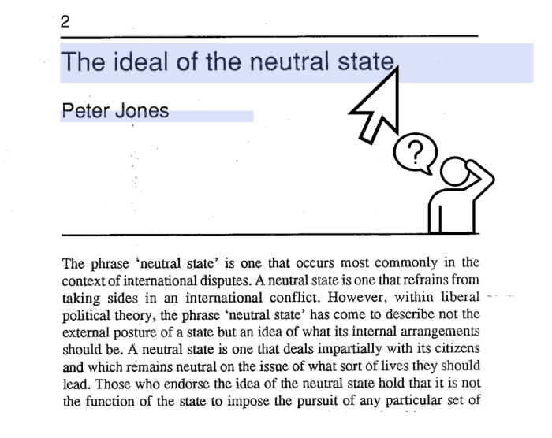
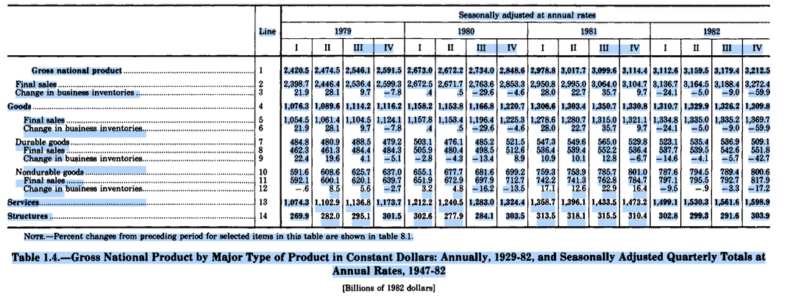
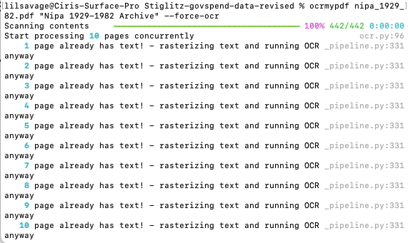
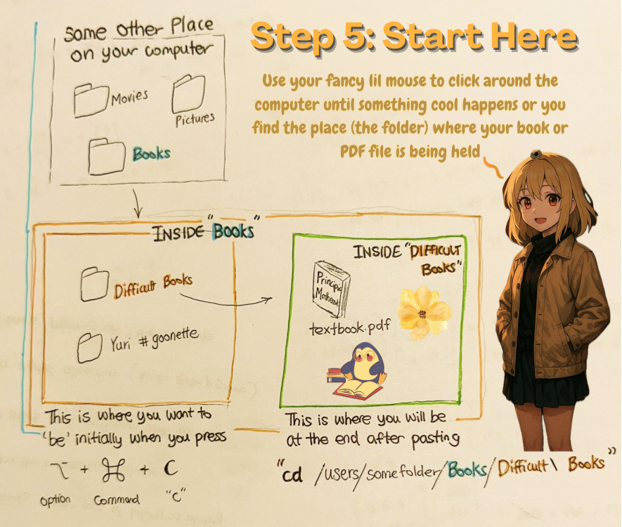
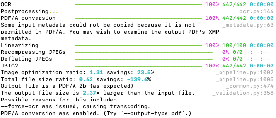

Fix PDFs and Old Document Scans With Unselectable Text to Fix Highlighting, Copy-Pasting Notes, and Allow LLMs to Read
You know how sometimes you have those PDFs of old, scanned documents (like when your professor photocopies a physical textbook from 1983) and for some reason every ‘page’ is in landscape orientation (longer than it is wide) and is really two adjacent pages and…
none of the text is selectable.
Like you run your mouse over it, you try to ctrl+f to match some text, and there’s just nothing at all, nothing happens.
This sucks because now you can’t highlight anything, or copy excerpts from the PDF into your notes, and, most recently now, it also means that some large language models (LLMs) won’t process your PDF at all. If you haven’t tried this before, Chat-GPT outright rejects these kinds of PDFs.
The way you fix this is with optical character recognition (OCR) which just converts ‘pictures’ of text into actual, selectable text.
Why You Might Want to OCRyourPDF
Okay, you might say, “but what if my PDF seems mostly fine. I mean it’s just a bunch of tables and most of the text I’ve tried selecting—at least on the first page—works okay. To that, I say this. *First*, neither of those two em-dashes were generated by a language model. The rhetorical genius you are reading now could only have come from someone rated in the top 5% of fried chicken reviewers on Google Maps.
Second, "ah", I say, stroking my scrunchy. You see, you’ve fallen for a common trap here: thinking tools like OCRmyPDF are only for (completely) broken PDFs. Actually, tools like this are useful broadly and especially for complex PDFs that contains things like tabular data.

For example, in the image above I was literally fighting typesetting demons and LaTeX special agents all because I sinned to dream of trying to copy and paste a row of data into Excel from my PDF. Right away I think you can see a few problems:
- when I highlight a row, for some reason the entire column above it, and even some of the rows beside those columns started getting selected
- Here: I was merely trying to select the row “Goods” on line 4 of the table and… it selected half the table, and interesting all of the years as well, BUT
- only two out of every four quarters (on the third row), and
- fascinatingly, none of the actual line/index numbers under the ‘line’ column
- And notice also how for some of the text the selected parts line up but for others like the bottom row of values, the ‘selectable’ part of the text is literally a blue rectangle like their seat
My point is that the reason I’m teaching you this is because I think once you know how to do it, using tools like OCRmyPDF will become more common than you think, because you’ll just start to notice how awful and lowkey inconvenient most of these PDFs out there are.
The Solution: OCRmyPDF to Fix ‘Dumb’ PDFs
OCRmyPDF is the best tool I’ve found so far for this. Yes, there are other online tools, like websites that will let you upload a PDF and try and fix it for you, or free software like ABBYY FineReader that also works okay. But if you just want something really powerful and you have experience (or aren’t scared) of using a command line interface then I think you should at least try OCRmyPDF because:
- It can deskew (straighten) rotated pages, and adjust contrast and brightness
- It usually produces a searchable PDF full of selectable text automatically
- In my experience it usually works out of the box (meaning you just give it a PDF and it gives you a better PDF)
Note: since OCRmyPDF isn’t just for ‘fixing’ (completely broken PDFs), and is actually also the best tool out there for upgrading kinda-working-but-kinda-mostly-not PDFs, you may run into an error when you try the steps below if your PDF is broken like a window is broken but the house is still there.

If you get an error like page already has text ! then skip this section and go to the bottom first.
Step-By-Step Guide (Follow Literally)
This is how you make OCRmyPDF work on a Mac. If you don’t have technical experience, just follow the steps fully and it should work perfectly. The steps in italics can be skipped for those who already know what they are doing (and what they don’t need to do). If you don’t know what the steps mean, just do them by following the substeps listed exactly.
- Buy a MacBook 🥸
- Open “Terminal” on your Mac
- Press “Cmd+Spacebar” on the keyboard
- Then type in Terminal into the search bar that appears
- Install Homebrew (ignore if you have it already)
- Copy this sentence: /bin/bash -c "$(curl -fsSL https://raw.githubusercontent.com/Homebrew/install/HEAD/install.sh)"
- Paste that sentence into the terminal by pressing “Cmd+V”
- Press Enter
- Wait until it’s done installing. A good rule of thumb is to wait three minutes and watch a Youtube video.
- Install OCRmyPDF
- Keep that Terminal open. You better not close it.
- Now type into the Terminal this exact sentence: brew install ocrmypdf
- Wait until it is done installing. A good rule of thumb is to wait five minutes and watch a longer Youtube video.
- Find the PDF you want to fix on your computer (using the app “Finder” on MacBook)
- Look at what folder your PDF is in.
- For example, your PDF is called “textbook.pdf” and is inside your “difficult books” folder, which is itself also inside your “books” folder like: books → difficult books → textbook.pdf
- In this case, your PDF is inside the difficult books folder. This is the ‘child’ folder. We want the address for this folder.
Copy the file address/path of your folder
- To get the address for your child folder, the “difficult books” folder in this example, we need to go to one level up to the parent folder. Remember: the parent folder is the “books” folder, because “difficult books” is INSIDE of books.
- This means if your textbook.pdf is inside of the difficult books folder, and the difficult books folder is inside your more general books folder, go to your “books” folder. 
- Check: if you did this right, whatever folder you are in, should be one level up from the actual folder that has your PDF
- If your textbook.pdf is in the “difficult books” folder, when you are ‘one level up’ from “difficult books”, YOU SHOULD ONLY SEE THE “DIFFICULT BOOKS” FOLDER, NOT YOUR PDF
- If you see your .pdf file, you are in the same folder/level as that file. This is no good. Go one level up.
- You should see the child folder (e.g. “difficult books”) not the PDF (which is inside of difficult books)
- Click ONCE on the folder using your mouse (left click). It should have a grey box appear around it to show it has been selected.
- On your keyboard, press these three keys down at the same time: “Option+Cmd+C” (The option key, the command key, and the letter C) and hold them down for at least half a second
- Go back to the Terminal and perform this exact ritual:
- Type “clear” and press enter
- Type “cd” and press spacebar
- Press “Cmd+V” on your keyboard to PASTE the address of the child folder and press enter
- Type “pwd” and press enter
- The latest line on your Terminal should look something like this: “/Users/documents/your_books_folder/difficult_books”. Don’t worry if the names are different, as long as you see your child and parent folder’s name somewhere in there you are good.
Run OCR on your PDF
- Now that it’s installed, here’s the fun part. In the Terminal, type: ocrmypdf “NameOfYourPDF.pdf” “NewNameofYourPDF.pdf”
- For example, since in our imaginary scenario the PDF that I’m trying to fix is called “textbook.pdf”, I might choose to name the fixed version something appropriate like “fixed-textbook.pdf”. In this case I will type into the Terminal:
ocrmypdf "textbook.pdf" "fixed-textbook.pdf" - If instead my PDF was called “untitled1.pdf” and I wanted to name the fixed version “story.pdf” I would just type:
ocrmypdf untitled1.pdf **story.pdf**
- For example, since in our imaginary scenario the PDF that I’m trying to fix is called “textbook.pdf”, I might choose to name the fixed version something appropriate like “fixed-textbook.pdf”. In this case I will type into the Terminal:
- This is the crazy part. I hope you understand the gravity of the situation. Now, you press ENTER.

- You should see something like this above. Now, depending on the size of your PDF you should find at least a two minute activity to do, but no more than thirty.
- Then, check your folder again. If you did things right, the old PDF and the new fixed version (with the name you gave it) should both be in the folder
- Now that it’s installed, here’s the fun part. In the Terminal, type: ocrmypdf “NameOfYourPDF.pdf” “NewNameofYourPDF.pdf”
Blindfolded Troubleshooting
If OCRmyPDF isn’t working for you because it says that your PDF already has ‘text’ or it claims that it can already see some ghost of a h2 level heading or the faint outline of a paragraph but you know the PDF is broken harder US-China relations, then try this:
pray👩🔬- add
--force-ocrto the end of the last-ish step where you type in: ocrmypdf NameOfYourPDF.pdf NewNameofYourPDF.pdf now instead, the full thing that you should be typing into your terminal would look more like this:
ocrmypdf NameOfYourPDF.pdf NewNameofYourPDF.pdf --force-ocrNote: the difference between using quotation marks before the names of the files and not (like the lazy way I did it here in the example above) is that you MUST use quotation marks if:
- the old name of your file has spaces, like Robert Wagner’s Love Adventure.pdf
- the new name that you want your file to have also has spaces like: Love Adventure (Wagner - 2015).pdf
- In this case, it won’t work unless you use quotation marks like
ocrmypdf "Robert Wagner’s Love Adventure.pdf" "Love Adventure (Wagner - 2015).pdf" **--force-ocr
“Ghostscript Failed” / “ImageMagick error”
You may also be confronted with this error message about a ghost who… isn’t a good hollywood screenwriter? Anyways, whenever something like this appears: Error: Ghostscript failed
Anyways, whatever it means, this is how you fix it:
- Add the
--optimize 0flag to disable aggressive image processing. Flag here just means ‘magic words we add after the main line of code for the command’.- Although note: ‘flags’ can technically be added anywhere most of the time, see the very bottom
- Add
--pdf-renderer tesseractif it’s a renderer issue. - e.g.
ocrmypdf “untitled.pdf” “PPG2013H Week 2 reading - Salem” **--optimize 0**
“Too Many Rasterizations”
The program might have something against people converting to whatever religion Bob Marley was from but, unlike most discrimination, this one has an easy fix. Simply
- Add --max-image-mpixels 0 to disable the megapixel safety limit. (Note: the manual says to use this one carefully but honestly idk anything about pixels or megas or computers I say just use it however you want. Frankly, do it while pregnant. Or with high blood pressure.)
- e.g.
ocrmypdf **--max-image-mpixels 0** input.pdf output.pdf- This is a wonderful example of a ‘free thinker’ electing to specify the flags in the middle of the conventional command/line of code
- Follow this lead if your goal is not to ‘improve PDFs’ but strengthen the underlying communities and social structures that are responsible for creating our lived experiences